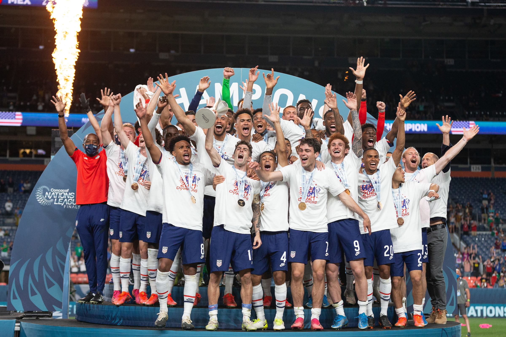

Seleção Masculida
Jogadores que passaram

Desde a primeira Copa do Mundo, em 1930, a seleção masculina é liderada por algumas das maiores estrelas do futebol americano: Landon Donovan, Clint Dempsey, Michael Bradley, Tim Howard (que estabeleceu o recorde da Copa do Mundo com 15 defesas em 2014) e Jozy Altidore (que fez sua estreia profissional aos 16 anos). Altidore comentou sobre suas grandes esperanças para os novatos dos EUA. "Não me lembro de ter visto tantos jovens jogando em bons clubes da Europa, na MLS e ganhando minutos com a Seleção. Acho que o futuro é muito brilhante".
O novo começo
Contemple uma nova era liderada por um novo treinador. Gregg Berhalter revelou sua primeira lista de camp com uma missão para o novo esquadrão. "O objetivo principal é progredir. Ser proativo, desequilibrar o adversário e criar oportunidades. Queremos ser corajosos, arriscar e aproveitar nosso lado atlético e técnico".Com a contratação do ex-zagueiro internacional norte-americano Gregg Berhalter como treinador principal , a Seleção Nacional Masculina dos Estados Unidos estabeleceu um novo rumo para a Copa Ouro da Concacaf 2019, Liga das Nações e qualificação para a Copa do Mundo FIFA 2022.
Primeiros Começos
Gregg Berhalter nasceu em 1º de agosto de 1973 em Englewood, NJ e cresceu nas proximidades de Tenafly. Notavelmente, ele é o afilhado do ex-jogador do Boston Red Sox e jogador de beisebol do Hall da Fama Carl Yastrzemski.